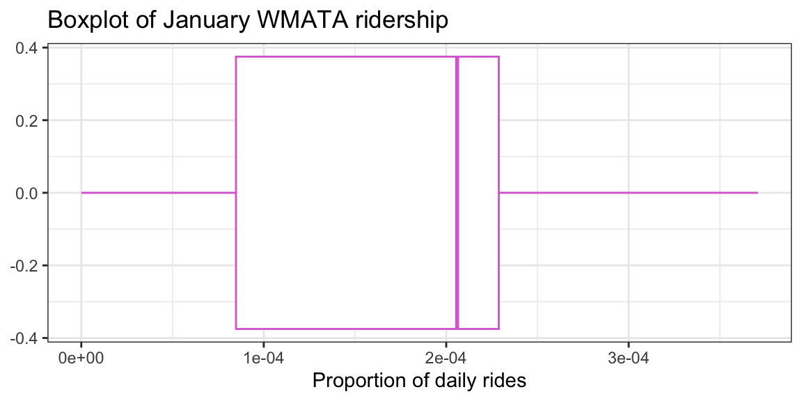
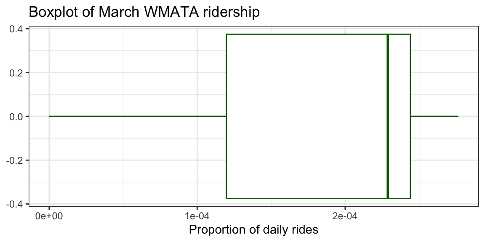
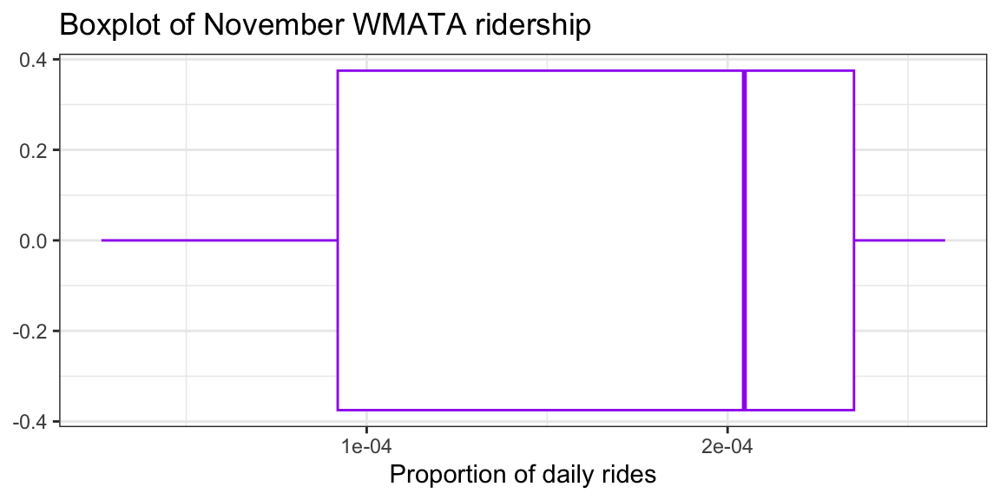
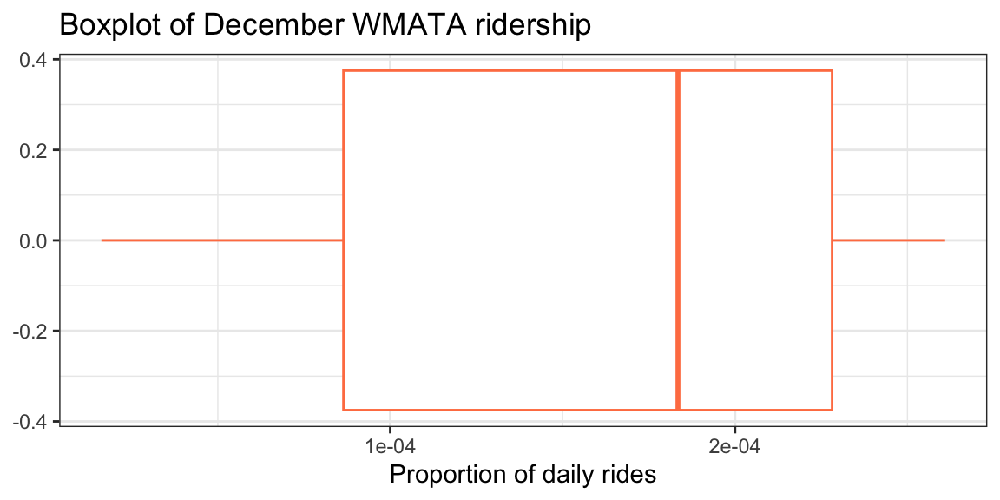

library(tidyverse)
library(lubridate)Hardy Assignment 2
Question 1:
Write a function pos_na() that takes two vectors of equal length and returns the positions where both vectors contain NA.
If the vectors do not have the same length, the function should return the message:
"The vectors are not the same length."
Use the following pairs of vectors to test your function:
c(1, NA, 2)andc(NA, NA)c(NA, NA, 2)andc(NA, NA, 2)c(NA, 5, NA)andc(NA, NA, NA)c(NA, NA, NA, 2, NA, 4, NA)andc(NA, NA, 2, 4, 4, NA, NA)c(1, NA, NA, 2, NA, 4, NA)andc(NA, -5, 2, 4, 4, NA, 11)
Here’s a polished, professional way to label those two parts of the assignment. It reads cleanly and sets expectations without adding extra wording.
(1i) Using an if statement
Write a version of pos_na() that checks whether the two input vectors have the same length using an if statement.
If they do, return the positions where both vectors contain
NA.If they do not, return the message:
"The vectors are not the same length."
pos_na <- function(v1, v2) {
if(length(v1) != length(v2)) {
return("The vectors are not the same length.")
} else {
na <- which(is.na(v1) & is.na(v2))
return(na)
}
}
one <- c(1, NA, 2)
two <- c(NA, NA)
pos_na(one, two)[1] "The vectors are not the same length."a <- c(NA, NA, 2)
b <- c(NA, NA, 2)
pos_na(a, b)[1] 1 2add <- c(NA, 5, NA)
sub <- c(NA, NA, NA)
pos_na(add, sub)[1] 1 3app <- c(NA, NA, NA, 2, NA, 4, NA)
ban <- c(NA, NA, 2, 4, 4, NA, NA)
pos_na(app, ban)[1] 1 2 7r <- c(1, NA, NA, 2, NA, 4, NA)
w <- c(NA, -5, 2, 4, 4, NA, 11)
pos_na(r, w)integer(0)(1ii) Without using an if statement
Write a second version of pos_na() that performs the same task without using an if statement.
- You may use any other valid R mechanism (e.g.,
stop(),stopifnot(), or logical short‑circuiting) to handle the case where the vectors differ in length.
pos_na2 <- function(v1, v2) {
outputs <- list(which(is.na(v1) & is.na(v2)),
"The vectors are not the same length.")
logicvariable <- 2 - (length(v1) == length(v2))
return(outputs[[logicvariable]])
}
one <- c(1, NA, 2)
two <- c(NA, NA)
pos_na2(one, two)Warning in is.na(v1) & is.na(v2): longer object length is not a multiple of
shorter object length[1] "The vectors are not the same length."a <- c(NA, NA, 2)
b <- c(NA, NA, 2)
pos_na2(a, b)[1] 1 2add <- c(NA, 5, NA)
sub <- c(NA, NA, NA)
pos_na2(add, sub)[1] 1 3app <- c(NA, NA, NA, 2, NA, 4, NA)
ban <- c(NA, NA, 2, 4, 4, NA, NA)
pos_na2(app, ban)[1] 1 2 7r <- c(1, NA, NA, 2, NA, 4, NA)
w <- c(NA, -5, 2, 4, 4, NA, 11)
pos_na2(r, w)integer(0)``
Question 2
Load the wmata_ridership data frame into R from https://dcgerard.github.io/stat_412_612/data/wmata_ridership.csv. For each month, calculate the proportion of rides made on a given day of the month. Then make box plots of the proportion excluding days from 2004 and 2005
wmata <- read.csv("wmata_ridership.csv")
str(wmata)
wmata <- wmata %>%
mutate(prop = Total/sum(Total)) %>%
filter(!substr(wmata$Date, 3, 4) == "04" & !substr(wmata$Date, 3, 4) == "05")
jan <- wmata[substr(wmata$Date, 6, 7) == "01", ]
feb <- wmata[substr(wmata$Date, 6, 7) == "02", ]
mar <- wmata[substr(wmata$Date, 6, 7) == "03", ]
apr <- wmata[substr(wmata$Date, 6, 7) == "04", ]
may <- wmata[substr(wmata$Date, 6, 7) == "05", ]
jun <- wmata[substr(wmata$Date, 6, 7) == "06", ]
jul <- wmata[substr(wmata$Date, 6, 7) == "07", ]
aug <- wmata[substr(wmata$Date, 6, 7) == "08", ]
sep <- wmata[substr(wmata$Date, 6, 7) == "09", ]
oct <- wmata[substr(wmata$Date, 6, 7) == "10", ]
nov <- wmata[substr(wmata$Date, 6, 7) == "11", ]
dec <- wmata[substr(wmata$Date, 6, 7) == "12", ]ggplot(data = jan, mapping = aes(x = prop)) +
geom_boxplot(col = "orchid", fill = "white") +
labs(x = "Proportion of daily rides",
title = "Boxplot of January WMATA ridership") +
theme_bw()
ggplot(data = feb, mapping = aes(x = prop)) +
geom_boxplot(col = "blue", fill = "white") +
labs(x = "Proportion of daily rides",
title = "Boxplot of February WMATA ridership") +
theme_bw()
ggplot(data = mar, mapping = aes(x = prop)) +
geom_boxplot(col = "darkgreen", fill = "white") +
labs(x = "Proportion of daily rides",
title = "Boxplot of March WMATA ridership") +
theme_bw()
ggplot(data = apr, mapping = aes(x = prop)) +
geom_boxplot(col = "red", fill = "white") +
labs(x = "Proportion of daily rides",
title = "Boxplot of April WMATA ridership") +
theme_bw()
ggplot(data = may, mapping = aes(x = prop)) +
geom_boxplot(col = "brown", fill = "white") +
labs(x = "Proportion of daily rides",
title = "Boxplot of May WMATA ridership") +
theme_bw()
ggplot(data = jun, mapping = aes(x = prop)) +
geom_boxplot(col = "black", fill = "white") +
labs(x = "Proportion of daily rides",
title = "Boxplot of June WMATA ridership") +
theme_bw()
ggplot(data = jul, mapping = aes(x = prop)) +
geom_boxplot(col = "darkorange", fill = "white") +
labs(x = "Proportion of daily rides",
title = "Boxplot of July WMATA ridership") +
theme_bw()
ggplot(data = aug, mapping = aes(x = prop)) +
geom_boxplot(col = "darkred", fill = "white") +
labs(x = "Proportion of daily rides",
title = "Boxplot of August WMATA ridership") +
theme_bw()
ggplot(data = sep, mapping = aes(x = prop)) +
geom_boxplot(col = "deeppink", fill = "white") +
labs(x = "Proportion of daily rides",
title = "Boxplot of September WMATA ridership") +
theme_bw()
ggplot(data = oct, mapping = aes(x = prop)) +
geom_boxplot(col = "darkblue", fill = "white") +
labs(x = "Proportion of daily rides",
title = "Boxplot of October WMATA ridership") +
theme_bw()
ggplot(data = nov, mapping = aes(x = prop)) +
geom_boxplot(col = "purple", fill = "white") +
labs(x = "Proportion of daily rides",
title = "Boxplot of November WMATA ridership") +
theme_bw()
ggplot(data = dec, mapping = aes(x = prop)) +
geom_boxplot(col = "coral", fill = "white") +
labs(x = "Proportion of daily rides",
title = "Boxplot of December WMATA ridership") +
theme_bw()
Question 3:
Write R code that extracts the elements “Bears”, “Dolphins”, and “Bengals” from the vector V shown below, and display the result.
V <- c("Bears", "Lions", "Dolphins", "Eagles", "Bengals")(3i) Subsetting by index
V[c(1, 3, 5)][1] "Bears" "Dolphins" "Bengals" (3ii) Subsetting using a for loop
animals <- c(1, 3, 5)
empty <- c()
for(i in animals) {
empty <- c(empty, V[i])
}
empty[1] "Bears" "Dolphins" "Bengals" (3iii)Returning all values in a single vector (one line of code)
V[c(1, 3, 5)][1] "Bears" "Dolphins" "Bengals" (a) Using positive indices
V[c(1, 3, 5)][1] "Bears" "Dolphins" "Bengals" (b) Using negative indices
V[c(-2, -4)][1] "Bears" "Dolphins" "Bengals" (c) Using logical indexing
V[c(TRUE, FALSE, TRUE, FALSE, TRUE)][1] "Bears" "Dolphins" "Bengals" (d) Attempting to subset by names
Vnames <- c(bears = "Bears", lions = "Lions", dolphins = "Dolphins",
eagles = "Eagles", bengals = "Bengals")
Vnames[c("bears", "dolphins", "bengals")] bears dolphins bengals
"Bears" "Dolphins" "Bengals" Question 4:
You are given a character vector containing messy employee records. Each entry includes:
- an employee name (string),
- a hire date in inconsistent formats,
- and a department code that should be treated as a factor.
records <- c(
"Steve McQueen | 2020-01-15 | HR",
"B. Smith | 15/02/2021 | FIN",
"Carlos M | March 3, 2019 | IT",
"D. Lee | 2018/07/30 | HR",
"Alain Delon | 04-12-2020 | MKT"
)
records[1] "Steve McQueen | 2020-01-15 | HR" "B. Smith | 15/02/2021 | FIN"
[3] "Carlos M | March 3, 2019 | IT" "D. Lee | 2018/07/30 | HR"
[5] "Alain Delon | 04-12-2020 | MKT" Parse each record into three separate variables:
name
hire_date
dept
records_cleaned <- str_split(records, "\\|", simplify = TRUE)
records_cleaned <- setNames(as.data.frame(records_cleaned), c("name", "hire_date",
"dept"))- Convert
hire_dateinto a properDateobject, correctly handling all of the different date formats.
library(parsedate)
Attaching package: 'parsedate'The following object is masked from 'package:readr':
parse_daterecords_cleaned$hire_date <- parse_date(records_cleaned$hire_date)- Convert
deptinto an ordered factor with the levels:
HR,FIN,IT,MKT.
records_cleaned <- records_cleaned %>%
mutate(dept = str_trim(dept)) %>%
mutate(dept = as.factor(dept)) %>%
mutate(dept = fct_relevel(dept, "HR", "FIN", "IT", "MKT"))- Construct a clean data frame containing the parsed and converted variables.
records_cleaned name hire_date dept
1 Steve McQueen 2020-01-15 HR
2 B. Smith 2021-02-15 FIN
3 Carlos M 2019-03-03 IT
4 D. Lee 2018-07-30 HR
5 Alain Delon 2020-04-12 MKT- Add a new variable called
years_workedthat reports the number of full years each employee has worked as of today.
years_worked <- numeric(nrow(records_cleaned))
for (i in 1:nrow(records_cleaned)) {
yearhired <- year(records_cleaned$hire_date[i])
yeartoday <- year(today())
mmddhired <- as.numeric(format(records_cleaned$hire_date[i], "%m%d"))
mmddtoday <- as.numeric(format(today(), "%m%d"))
if (mmddhired > mmddtoday) {
years_worked[i] <- yeartoday - yearhired - 1
} else {
years_worked[i] <- yeartoday - yearhired
}
}
years_worked[1] 6 4 6 7 5records_cleaned <- records_cleaned %>%
mutate(years_worked = years_worked)- Return the final cleaned data frame.
records_cleaned name hire_date dept years_worked
1 Steve McQueen 2020-01-15 HR 6
2 B. Smith 2021-02-15 FIN 4
3 Carlos M 2019-03-03 IT 6
4 D. Lee 2018-07-30 HR 7
5 Alain Delon 2020-04-12 MKT 5